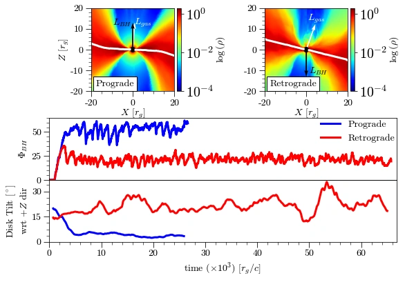

<div id="ajax-page" class="ajax-page-content">
  <div class="ajax-page-wrapper">

    <div class="ajax-page-nav">
      <div class="nav-item ajax-page-prev-next">
        <a class="ajax-page-load" href="portfolio-sane.html"><i class="lnr lnr-chevron-left"></i></a>
        <a class="ajax-page-load" href="portfolio-lorenz.html"><i class="lnr lnr-chevron-right"></i></a>
      </div>
      <div class="nav-item ajax-page-close-button">
        <a id="ajax-page-close-button" href="#"><i class="lnr lnr-cross"></i></a>
      </div>
    </div>

    <div class="ajax-page-title">
      <h1>Hot, Retrograde Tilted MADs: Misaligned, Precessing, and Shaped by Electromagnetic Torques</h1>
      <p style="margin: 6px 0 0; color: #666; font-size: 0.95em;">
        Paper under review (manuscript link below).
      </p>
    </div>

    <!-- HERO THUMB / FIGURE -->
    <div style="text-align: center; margin: 18px 0 14px;">
      
    </div>

    <div style="max-width: 920px; margin: 0 auto;">

      <hr style="border: none; border-top: 1px solid #eee; margin: 22px 0;">

      <h3 style="margin: 0 0 12px 0; text-align: left;">Status</h3>

      <p style="text-align: justify; line-height: 1.8; margin: 0 0 14px 0;">
        Paper is under review. Please stay tuned. You can see the submitted manuscript here:
        <a href="https://arxiv.org/abs/2601.16370" target="_blank" rel="noopener">arXiv (submitted manuscript)</a>.
      </p>

      <h3 style="margin: 22px 0 12px 0; text-align: left;">Project Details</h3>
      <p style="margin: 0; color: #555; line-height: 1.7;">
        Author: Sajal Gupta<br>
        Type: Refereed paper (under review)<br>
        Keywords: tilted accretion flows, MAD, GRMHD, alignment/warp dynamics
      </p>

    </div>

  </div>
</div>
